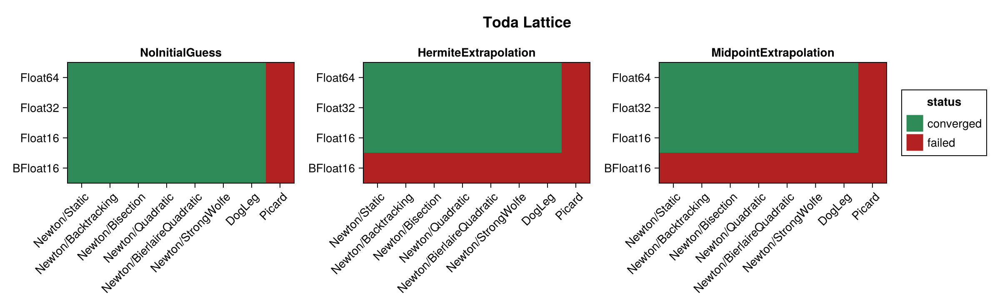
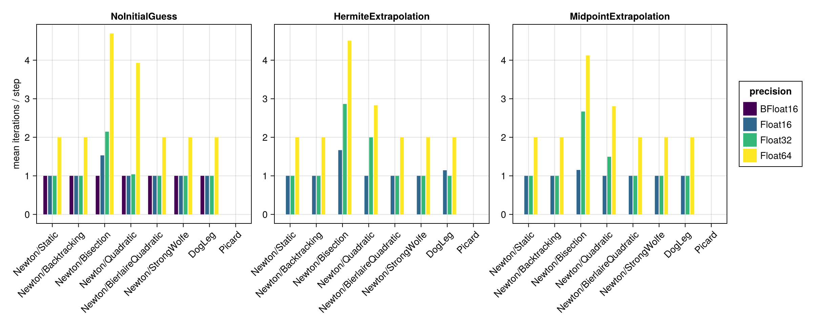
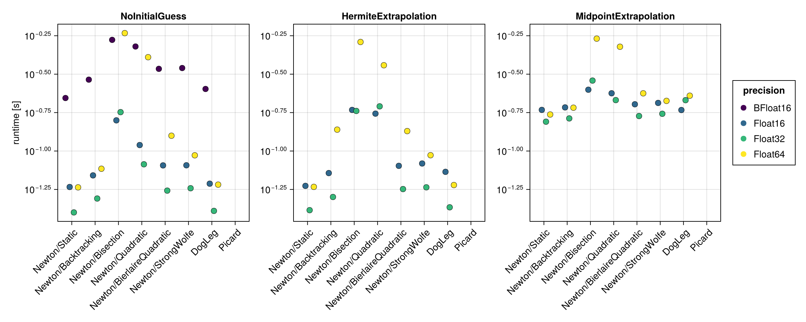
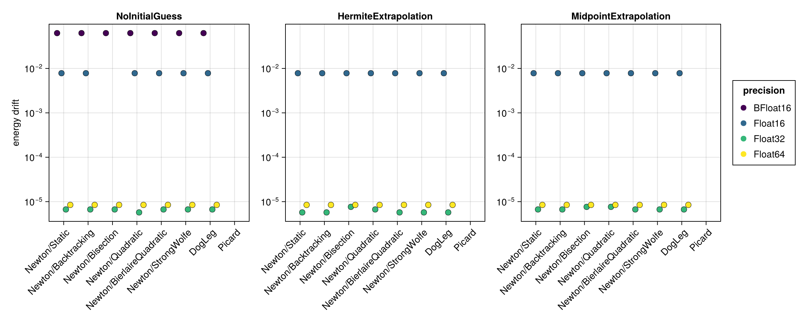
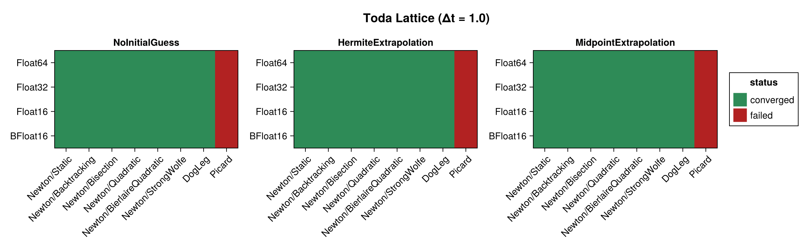
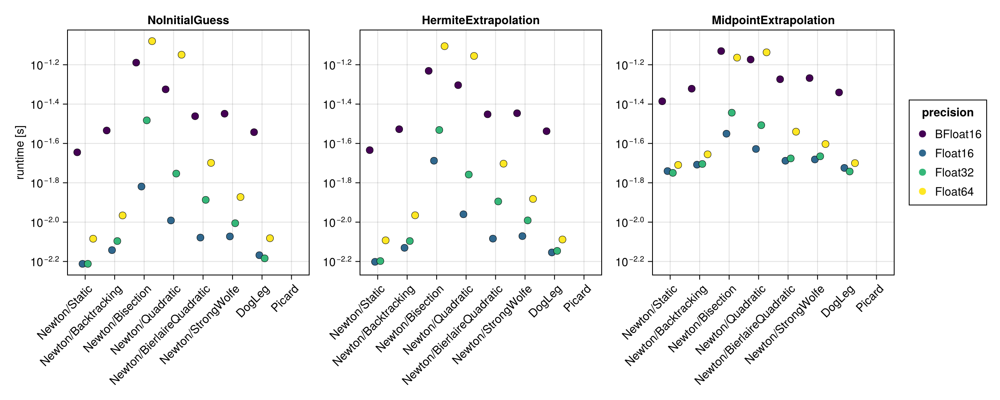
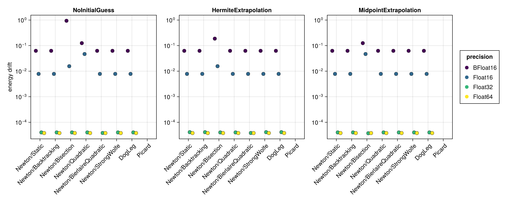

Toda Lattice
The Toda lattice is a nonlinear chain of particles with exponential nearest-neighbour interactions. It is built here with hodeproblem and a modest lattice size $N = 16$ (the full soliton example uses $N = 200$, which would make the implicit solves prohibitively expensive for a solver benchmark). The initial positions come from a bump of width $\mu = 0.3$ with zero initial momenta. The Hamiltonian $H(t, q, p)$ depends on both the coordinates and the momenta, so the energy-drift proxy is evaluated from the full $(q, p)$ state.
Unlike the Double Pendulum, this problem uses the framework's default residual tolerance $8\,\varepsilon(T)$. It carried the same relaxed $256\,\varepsilon(T)$ until that was measured against the alternative: the relaxation bought 3 converged runs out of 96 at $\Delta t = 0.1$ and 1 at $\Delta t = 1.0$, while costing one to two orders of magnitude of residual on every run that converged either way. The Toda lattice simply does not have the double pendulum's raised residual floor.
The benchmark below is regenerated at documentation build time with a single, fast timing pass. See the driver script scripts/midpoint_toda_lattice.jl for accurate BenchmarkTools measurements. The results are shown first for the standard step $\Delta t = 0.1$ and then repeated for a coarse step $\Delta t = 1.0$ (see Coarse time step (Δt = 1.0)).
using SolverBenchmark
spec = toda_lattice_spec(timespan = (0.0, 100.0), timestep = 0.1)
df = run_benchmark(spec; timing = :quick, verbose = false, quiet = true)Convergence
plot_convergence(df; title = "Toda Lattice")
Nonlinear iterations
Mean number of nonlinear-solver iterations per time step (converged runs only):
plot_iterations(df)
Run time
plot_runtime(df)
Energy drift
Drift of the conserved energy $H(t, q, p)$ of the Toda lattice:
plot_energy_drift(df)
Discussion
- The 16-dimensional implicit solve is the most expensive of the examples, so the run-time differences between solver configurations are more pronounced.
Float16,Float32andFloat64are indistinguishable in convergence (21/24 each at $\Delta t = 0.1$): despite being the highest-dimensional problem of the set, the Toda lattice is well conditioned, and the three failures in each column arePicard, which never converges here.BFloat16reaches only 7/24 at $\Delta t = 0.1$ but 21/24 at $\Delta t = 1.0$, matching the other three. The difference is not the solver but the time grid: at the finer stepBFloat16cannot represent $(0, 100)$ in increments of0.1, so the extrapolating initial guesses fail (see Harmonic Oscillator).- No closed-form solution is available, so accuracy is judged solely through the energy drift, which scales with the floating point precision.
Results table
markdown_table(summary_table(df))| precision | solver_label | initial_guess | converged | iterations_mean | runtime_s | max_residual | at_tolerance | energy_drift |
|---|---|---|---|---|---|---|---|---|
| BFloat16 | Newton/Static | NoInitialGuess | ✓ | 1 | 0.221 | 0.00873 | ✓ | 0.0625 |
| BFloat16 | Newton/Static | HermiteExtrapolation | ✗ | — | — | — | ✗ | — |
| BFloat16 | Newton/Static | MidpointExtrapolation | ✗ | — | — | — | ✗ | — |
| BFloat16 | Newton/Backtracking | NoInitialGuess | ✓ | 1 | 0.291 | 0.00873 | ✓ | 0.0625 |
| BFloat16 | Newton/Backtracking | HermiteExtrapolation | ✗ | — | — | — | ✗ | — |
| BFloat16 | Newton/Backtracking | MidpointExtrapolation | ✗ | — | — | — | ✗ | — |
| BFloat16 | Newton/Bisection | NoInitialGuess | ✓ | 1 | 0.529 | 0.0134 | ✓ | 0.0625 |
| BFloat16 | Newton/Bisection | HermiteExtrapolation | ✗ | — | — | — | ✗ | — |
| BFloat16 | Newton/Bisection | MidpointExtrapolation | ✗ | — | — | — | ✗ | — |
| BFloat16 | Newton/Quadratic | NoInitialGuess | ✓ | 1 | 0.479 | 0.008 | ✓ | 0.0625 |
| BFloat16 | Newton/Quadratic | HermiteExtrapolation | ✗ | — | — | — | ✗ | — |
| BFloat16 | Newton/Quadratic | MidpointExtrapolation | ✗ | — | — | — | ✗ | — |
| BFloat16 | Newton/BierlaireQuadratic | NoInitialGuess | ✓ | 1 | 0.343 | 0.00873 | ✓ | 0.0625 |
| BFloat16 | Newton/BierlaireQuadratic | HermiteExtrapolation | ✗ | — | — | — | ✗ | — |
| BFloat16 | Newton/BierlaireQuadratic | MidpointExtrapolation | ✗ | — | — | — | ✗ | — |
| BFloat16 | Newton/StrongWolfe | NoInitialGuess | ✓ | 1 | 0.347 | 0.00873 | ✓ | 0.0625 |
| BFloat16 | Newton/StrongWolfe | HermiteExtrapolation | ✗ | — | — | — | ✗ | — |
| BFloat16 | Newton/StrongWolfe | MidpointExtrapolation | ✗ | — | — | — | ✗ | — |
| BFloat16 | DogLeg | NoInitialGuess | ✓ | 1 | 0.253 | 0.00873 | ✓ | 0.0625 |
| BFloat16 | DogLeg | HermiteExtrapolation | ✗ | — | — | — | ✗ | — |
| BFloat16 | DogLeg | MidpointExtrapolation | ✗ | — | — | — | ✗ | — |
| BFloat16 | Picard | NoInitialGuess | ✗ | 1.08 | 0.0841 | 0.354 | ✗ | — |
| BFloat16 | Picard | HermiteExtrapolation | ✗ | — | — | — | ✗ | — |
| BFloat16 | Picard | MidpointExtrapolation | ✗ | — | — | — | ✗ | — |
| Float16 | Newton/Static | NoInitialGuess | ✓ | 1 | 0.0583 | 0.0012 | ✓ | 0.00781 |
| Float16 | Newton/Static | HermiteExtrapolation | ✓ | 1 | 0.0593 | 0.0026 | ✓ | 0.00781 |
| Float16 | Newton/Static | MidpointExtrapolation | ✓ | 1 | 0.185 | 0.00124 | ✓ | 0.00781 |
| Float16 | Newton/Backtracking | NoInitialGuess | ✓ | 1 | 0.0694 | 0.0012 | ✓ | 0.00781 |
| Float16 | Newton/Backtracking | HermiteExtrapolation | ✓ | 1 | 0.0719 | 0.0026 | ✓ | 0.00781 |
| Float16 | Newton/Backtracking | MidpointExtrapolation | ✓ | 1 | 0.192 | 0.00124 | ✓ | 0.00781 |
| Float16 | Newton/Bisection | NoInitialGuess | ✓ | 1.53 | 0.158 | 0.00763 | ✓ | 0 |
| Float16 | Newton/Bisection | HermiteExtrapolation | ✓ | 1.67 | 0.185 | 0.00781 | ✓ | 0.00781 |
| Float16 | Newton/Bisection | MidpointExtrapolation | ✓ | 1.15 | 0.251 | 0.00774 | ✓ | 0.00781 |
| Float16 | Newton/Quadratic | NoInitialGuess | ✓ | 1 | 0.109 | 0.00117 | ✓ | 0.00781 |
| Float16 | Newton/Quadratic | HermiteExtrapolation | ✓ | 1 | 0.175 | 0.00283 | ✓ | 0.00781 |
| Float16 | Newton/Quadratic | MidpointExtrapolation | ✓ | 1 | 0.238 | 0.00112 | ✓ | 0.00781 |
| Float16 | Newton/BierlaireQuadratic | NoInitialGuess | ✓ | 1 | 0.0806 | 0.0012 | ✓ | 0.00781 |
| Float16 | Newton/BierlaireQuadratic | HermiteExtrapolation | ✓ | 1 | 0.0801 | 0.0026 | ✓ | 0.00781 |
| Float16 | Newton/BierlaireQuadratic | MidpointExtrapolation | ✓ | 1 | 0.201 | 0.00124 | ✓ | 0.00781 |
| Float16 | Newton/StrongWolfe | NoInitialGuess | ✓ | 1 | 0.0808 | 0.0012 | ✓ | 0.00781 |
| Float16 | Newton/StrongWolfe | HermiteExtrapolation | ✓ | 1 | 0.083 | 0.0026 | ✓ | 0.00781 |
| Float16 | Newton/StrongWolfe | MidpointExtrapolation | ✓ | 1 | 0.206 | 0.00124 | ✓ | 0.00781 |
| Float16 | DogLeg | NoInitialGuess | ✓ | 1 | 0.0613 | 0.0012 | ✓ | 0.00781 |
| Float16 | DogLeg | HermiteExtrapolation | ✓ | 1.14 | 0.0732 | 0.00124 | ✓ | 0.00781 |
| Float16 | DogLeg | MidpointExtrapolation | ✓ | 1 | 0.185 | 0.00124 | ✓ | 0.00781 |
| Float16 | Picard | NoInitialGuess | ✗ | 2 | 0.0589 | 0.189 | ✗ | — |
| Float16 | Picard | HermiteExtrapolation | ✗ | — | — | — | ✗ | — |
| Float16 | Picard | MidpointExtrapolation | ✗ | 1.49 | 0.171 | 0.041 | ✗ | — |
| Float32 | Newton/Static | NoInitialGuess | ✓ | 1 | 0.0399 | 8.25e-07 | ✓ | 6.68e-06 |
| Float32 | Newton/Static | HermiteExtrapolation | ✓ | 1 | 0.0412 | 1.54e-07 | ✓ | 5.72e-06 |
| Float32 | Newton/Static | MidpointExtrapolation | ✓ | 1 | 0.155 | 1.64e-07 | ✓ | 6.68e-06 |
| Float32 | Newton/Backtracking | NoInitialGuess | ✓ | 1 | 0.0491 | 8.25e-07 | ✓ | 6.68e-06 |
| Float32 | Newton/Backtracking | HermiteExtrapolation | ✓ | 1 | 0.0502 | 1.54e-07 | ✓ | 5.72e-06 |
| Float32 | Newton/Backtracking | MidpointExtrapolation | ✓ | 1 | 0.163 | 1.64e-07 | ✓ | 6.68e-06 |
| Float32 | Newton/Bisection | NoInitialGuess | ✓ | 2.15 | 0.179 | 9.33e-07 | ✓ | 6.68e-06 |
| Float32 | Newton/Bisection | HermiteExtrapolation | ✓ | 2.87 | 0.182 | 9.52e-07 | ✓ | 7.63e-06 |
| Float32 | Newton/Bisection | MidpointExtrapolation | ✓ | 2.67 | 0.287 | 9.53e-07 | ✓ | 7.63e-06 |
| Float32 | Newton/Quadratic | NoInitialGuess | ✓ | 1.04 | 0.082 | 8.41e-07 | ✓ | 5.72e-06 |
| Float32 | Newton/Quadratic | HermiteExtrapolation | ✓ | 2 | 0.195 | 2.57e-07 | ✓ | 6.68e-06 |
| Float32 | Newton/Quadratic | MidpointExtrapolation | ✓ | 1.5 | 0.214 | 1.58e-07 | ✓ | 7.63e-06 |
| Float32 | Newton/BierlaireQuadratic | NoInitialGuess | ✓ | 1 | 0.0553 | 8.25e-07 | ✓ | 6.68e-06 |
| Float32 | Newton/BierlaireQuadratic | HermiteExtrapolation | ✓ | 1 | 0.0566 | 1.54e-07 | ✓ | 5.72e-06 |
| Float32 | Newton/BierlaireQuadratic | MidpointExtrapolation | ✓ | 1 | 0.169 | 1.64e-07 | ✓ | 6.68e-06 |
| Float32 | Newton/StrongWolfe | NoInitialGuess | ✓ | 1 | 0.0573 | 8.25e-07 | ✓ | 6.68e-06 |
| Float32 | Newton/StrongWolfe | HermiteExtrapolation | ✓ | 1 | 0.0581 | 1.54e-07 | ✓ | 5.72e-06 |
| Float32 | Newton/StrongWolfe | MidpointExtrapolation | ✓ | 1 | 0.175 | 1.64e-07 | ✓ | 6.68e-06 |
| Float32 | DogLeg | NoInitialGuess | ✓ | 1 | 0.0408 | 8.25e-07 | ✓ | 6.68e-06 |
| Float32 | DogLeg | HermiteExtrapolation | ✓ | 1 | 0.043 | 1.54e-07 | ✓ | 5.72e-06 |
| Float32 | DogLeg | MidpointExtrapolation | ✓ | 1 | 0.214 | 1.64e-07 | ✓ | 6.68e-06 |
| Float32 | Picard | NoInitialGuess | ✗ | 2.1 | 0.0779 | 0.188 | ✗ | — |
| Float32 | Picard | HermiteExtrapolation | ✗ | 2 | 0.0699 | 0.00115 | ✗ | — |
| Float32 | Picard | MidpointExtrapolation | ✗ | 2 | 0.175 | 0.00031 | ✗ | — |
| Float64 | Newton/Static | NoInitialGuess | ✓ | 2 | 0.058 | 2.84e-16 | ✓ | 8.45e-06 |
| Float64 | Newton/Static | HermiteExtrapolation | ✓ | 2 | 0.0584 | 3.02e-16 | ✓ | 8.45e-06 |
| Float64 | Newton/Static | MidpointExtrapolation | ✓ | 2 | 0.173 | 2.7e-16 | ✓ | 8.45e-06 |
| Float64 | Newton/Backtracking | NoInitialGuess | ✓ | 2 | 0.0767 | 2.84e-16 | ✓ | 8.45e-06 |
| Float64 | Newton/Backtracking | HermiteExtrapolation | ✓ | 2 | 0.138 | 3.02e-16 | ✓ | 8.45e-06 |
| Float64 | Newton/Backtracking | MidpointExtrapolation | ✓ | 2 | 0.191 | 2.7e-16 | ✓ | 8.45e-06 |
| Float64 | Newton/Bisection | NoInitialGuess | ✓ | 4.69 | 0.585 | 1.77e-15 | ✓ | 8.45e-06 |
| Float64 | Newton/Bisection | HermiteExtrapolation | ✓ | 4.5 | 0.512 | 1.72e-15 | ✓ | 8.45e-06 |
| Float64 | Newton/Bisection | MidpointExtrapolation | ✓ | 4.12 | 0.539 | 1.76e-15 | ✓ | 8.45e-06 |
| Float64 | Newton/Quadratic | NoInitialGuess | ✓ | 3.93 | 0.408 | 1.77e-15 | ✓ | 8.45e-06 |
| Float64 | Newton/Quadratic | HermiteExtrapolation | ✓ | 2.83 | 0.361 | 1.72e-15 | ✓ | 8.45e-06 |
| Float64 | Newton/Quadratic | MidpointExtrapolation | ✓ | 2.81 | 0.477 | 1.77e-15 | ✓ | 8.45e-06 |
| Float64 | Newton/BierlaireQuadratic | NoInitialGuess | ✓ | 2 | 0.126 | 2.84e-16 | ✓ | 8.45e-06 |
| Float64 | Newton/BierlaireQuadratic | HermiteExtrapolation | ✓ | 2 | 0.135 | 2.92e-16 | ✓ | 8.45e-06 |
| Float64 | Newton/BierlaireQuadratic | MidpointExtrapolation | ✓ | 2 | 0.237 | 2.85e-16 | ✓ | 8.45e-06 |
| Float64 | Newton/StrongWolfe | NoInitialGuess | ✓ | 2 | 0.0938 | 2.84e-16 | ✓ | 8.45e-06 |
| Float64 | Newton/StrongWolfe | HermiteExtrapolation | ✓ | 2 | 0.0939 | 3.02e-16 | ✓ | 8.45e-06 |
| Float64 | Newton/StrongWolfe | MidpointExtrapolation | ✓ | 2 | 0.212 | 2.7e-16 | ✓ | 8.45e-06 |
| Float64 | DogLeg | NoInitialGuess | ✓ | 2 | 0.0604 | 2.84e-16 | ✓ | 8.45e-06 |
| Float64 | DogLeg | HermiteExtrapolation | ✓ | 2 | 0.0601 | 3.02e-16 | ✓ | 8.45e-06 |
| Float64 | DogLeg | MidpointExtrapolation | ✓ | 2 | 0.229 | 2.7e-16 | ✓ | 8.45e-06 |
| Float64 | Picard | NoInitialGuess | ✗ | 2.1 | 0.138 | 0.188 | ✗ | — |
| Float64 | Picard | HermiteExtrapolation | ✗ | 2 | 0.113 | 0.00111 | ✗ | — |
| Float64 | Picard | MidpointExtrapolation | ✗ | 2 | 0.272 | 0.00031 | ✗ | — |
Coarse time step (Δt = 1.0)
With a ten times larger step the nonlinear solves per step become harder, which stresses the solvers more than the $\Delta t = 0.1$ results above.
spec1 = toda_lattice_spec(timespan = (0.0, 100.0), timestep = 1.0)
df1 = run_benchmark(spec1; timing = :quick, verbose = false, quiet = true)Convergence
plot_convergence(df1; title = "Toda Lattice (Δt = 1.0)")
Nonlinear iterations
plot_iterations(df1)Run time
plot_runtime(df1)
Energy drift
plot_energy_drift(df1)
Results table
markdown_table(summary_table(df1))| precision | solver_label | initial_guess | converged | iterations_mean | runtime_s | max_residual | at_tolerance | energy_drift |
|---|---|---|---|---|---|---|---|---|
| BFloat16 | Newton/Static | NoInitialGuess | ✓ | 1 | 0.0226 | 0.00885 | ✓ | 0.0625 |
| BFloat16 | Newton/Static | HermiteExtrapolation | ✓ | 1 | 0.0232 | 0.0203 | ✓ | 0.0625 |
| BFloat16 | Newton/Static | MidpointExtrapolation | ✓ | 1 | 0.0411 | 0.00818 | ✓ | 0.0625 |
| BFloat16 | Newton/Backtracking | NoInitialGuess | ✓ | 1 | 0.0292 | 0.00885 | ✓ | 0.0625 |
| BFloat16 | Newton/Backtracking | HermiteExtrapolation | ✓ | 1 | 0.0297 | 0.0203 | ✓ | 0.0625 |
| BFloat16 | Newton/Backtracking | MidpointExtrapolation | ✓ | 1 | 0.0477 | 0.00818 | ✓ | 0.0625 |
| BFloat16 | Newton/Bisection | NoInitialGuess | ✓ | 1.21 | 0.0647 | 0.0605 | ✓ | 0.938 |
| BFloat16 | Newton/Bisection | HermiteExtrapolation | ✓ | 1.09 | 0.0587 | 0.0625 | ✓ | 0.188 |
| BFloat16 | Newton/Bisection | MidpointExtrapolation | ✓ | 1.04 | 0.074 | 0.0591 | ✓ | 0.125 |
| BFloat16 | Newton/Quadratic | NoInitialGuess | ✓ | 1 | 0.0473 | 0.011 | ✓ | 0.125 |
| BFloat16 | Newton/Quadratic | HermiteExtrapolation | ✓ | 1 | 0.0497 | 0.0203 | ✓ | 0.0625 |
| BFloat16 | Newton/Quadratic | MidpointExtrapolation | ✓ | 1 | 0.0671 | 0.0083 | ✓ | 0.0625 |
| BFloat16 | Newton/BierlaireQuadratic | NoInitialGuess | ✓ | 1 | 0.0345 | 0.00885 | ✓ | 0.0625 |
| BFloat16 | Newton/BierlaireQuadratic | HermiteExtrapolation | ✓ | 1 | 0.0353 | 0.0203 | ✓ | 0.0625 |
| BFloat16 | Newton/BierlaireQuadratic | MidpointExtrapolation | ✓ | 1 | 0.0532 | 0.00818 | ✓ | 0.0625 |
| BFloat16 | Newton/StrongWolfe | NoInitialGuess | ✓ | 1 | 0.0356 | 0.00885 | ✓ | 0.0625 |
| BFloat16 | Newton/StrongWolfe | HermiteExtrapolation | ✓ | 1 | 0.0358 | 0.0203 | ✓ | 0.0625 |
| BFloat16 | Newton/StrongWolfe | MidpointExtrapolation | ✓ | 1 | 0.054 | 0.00818 | ✓ | 0.0625 |
| BFloat16 | DogLeg | NoInitialGuess | ✓ | 1 | 0.0287 | 0.00885 | ✓ | 0.0625 |
| BFloat16 | DogLeg | HermiteExtrapolation | ✓ | 1 | 0.029 | 0.0203 | ✓ | 0.0625 |
| BFloat16 | DogLeg | MidpointExtrapolation | ✓ | 1 | 0.0456 | 0.00818 | ✓ | 0.0625 |
| BFloat16 | Picard | NoInitialGuess | ✗ | — | — | — | ✗ | — |
| BFloat16 | Picard | HermiteExtrapolation | ✗ | 3 | 0.00171 | Inf | ✗ | — |
| BFloat16 | Picard | MidpointExtrapolation | ✗ | 1.61 | 0.0298 | 0.188 | ✗ | — |
| Float16 | Newton/Static | NoInitialGuess | ✓ | 1 | 0.00614 | 0.00229 | ✓ | 0.00781 |
| Float16 | Newton/Static | HermiteExtrapolation | ✓ | 1 | 0.00628 | 0.00117 | ✓ | 0.00781 |
| Float16 | Newton/Static | MidpointExtrapolation | ✓ | 1 | 0.0182 | 0.00106 | ✓ | 0.00781 |
| Float16 | Newton/Backtracking | NoInitialGuess | ✓ | 1 | 0.00721 | 0.00229 | ✓ | 0.00781 |
| Float16 | Newton/Backtracking | HermiteExtrapolation | ✓ | 1 | 0.0074 | 0.00117 | ✓ | 0.00781 |
| Float16 | Newton/Backtracking | MidpointExtrapolation | ✓ | 1 | 0.0196 | 0.00106 | ✓ | 0.00781 |
| Float16 | Newton/Bisection | NoInitialGuess | ✓ | 1.36 | 0.0152 | 0.00561 | ✓ | 0.0156 |
| Float16 | Newton/Bisection | HermiteExtrapolation | ✓ | 2 | 0.0205 | 0.00781 | ✓ | 0.0156 |
| Float16 | Newton/Bisection | MidpointExtrapolation | ✓ | 1.45 | 0.0282 | 0.00779 | ✓ | 0.0469 |
| Float16 | Newton/Quadratic | NoInitialGuess | ✓ | 1 | 0.0102 | 0.0035 | ✓ | 0.0469 |
| Float16 | Newton/Quadratic | HermiteExtrapolation | ✓ | 1 | 0.011 | 0.00189 | ✓ | 0.00781 |
| Float16 | Newton/Quadratic | MidpointExtrapolation | ✓ | 1 | 0.0235 | 0.00109 | ✓ | 0.00781 |
| Float16 | Newton/BierlaireQuadratic | NoInitialGuess | ✓ | 1 | 0.00835 | 0.00229 | ✓ | 0.00781 |
| Float16 | Newton/BierlaireQuadratic | HermiteExtrapolation | ✓ | 1 | 0.00824 | 0.00117 | ✓ | 0.00781 |
| Float16 | Newton/BierlaireQuadratic | MidpointExtrapolation | ✓ | 1 | 0.0205 | 0.00106 | ✓ | 0.00781 |
| Float16 | Newton/StrongWolfe | NoInitialGuess | ✓ | 1 | 0.00846 | 0.00229 | ✓ | 0.00781 |
| Float16 | Newton/StrongWolfe | HermiteExtrapolation | ✓ | 1 | 0.00849 | 0.00117 | ✓ | 0.00781 |
| Float16 | Newton/StrongWolfe | MidpointExtrapolation | ✓ | 1 | 0.0208 | 0.00106 | ✓ | 0.00781 |
| Float16 | DogLeg | NoInitialGuess | ✓ | 1 | 0.00679 | 0.00229 | ✓ | 0.00781 |
| Float16 | DogLeg | HermiteExtrapolation | ✓ | 1 | 0.00701 | 0.00117 | ✓ | 0.00781 |
| Float16 | DogLeg | MidpointExtrapolation | ✓ | 1 | 0.0189 | 0.00106 | ✓ | 0.00781 |
| Float16 | Picard | NoInitialGuess | ✗ | — | — | — | ✗ | — |
| Float16 | Picard | HermiteExtrapolation | ✗ | — | — | — | ✗ | — |
| Float16 | Picard | MidpointExtrapolation | ✗ | 1.91 | 0.0181 | 0.0341 | ✗ | — |
| Float32 | Newton/Static | NoInitialGuess | ✓ | 2 | 0.00614 | 2.28e-07 | ✓ | 4.01e-05 |
| Float32 | Newton/Static | HermiteExtrapolation | ✓ | 2 | 0.00634 | 1.31e-07 | ✓ | 4.1e-05 |
| Float32 | Newton/Static | MidpointExtrapolation | ✓ | 2 | 0.0178 | 1.21e-07 | ✓ | 4.01e-05 |
| Float32 | Newton/Backtracking | NoInitialGuess | ✓ | 2 | 0.00801 | 2.28e-07 | ✓ | 4.01e-05 |
| Float32 | Newton/Backtracking | HermiteExtrapolation | ✓ | 2 | 0.00802 | 1.31e-07 | ✓ | 4.1e-05 |
| Float32 | Newton/Backtracking | MidpointExtrapolation | ✓ | 2 | 0.0198 | 1.21e-07 | ✓ | 4.01e-05 |
| Float32 | Newton/Bisection | NoInitialGuess | ✓ | 2.99 | 0.0329 | 7.69e-07 | ✓ | 4.01e-05 |
| Float32 | Newton/Bisection | HermiteExtrapolation | ✓ | 3.65 | 0.0294 | 9.11e-07 | ✓ | 4.01e-05 |
| Float32 | Newton/Bisection | MidpointExtrapolation | ✓ | 3.05 | 0.036 | 8.66e-07 | ✓ | 3.72e-05 |
| Float32 | Newton/Quadratic | NoInitialGuess | ✓ | 2.81 | 0.0177 | 2.8e-07 | ✓ | 4.01e-05 |
| Float32 | Newton/Quadratic | HermiteExtrapolation | ✓ | 2.48 | 0.0175 | 8.66e-07 | ✓ | 4.01e-05 |
| Float32 | Newton/Quadratic | MidpointExtrapolation | ✓ | 2 | 0.0311 | 4.08e-07 | ✓ | 4.01e-05 |
| Float32 | Newton/BierlaireQuadratic | NoInitialGuess | ✓ | 2 | 0.013 | 2.14e-07 | ✓ | 3.81e-05 |
| Float32 | Newton/BierlaireQuadratic | HermiteExtrapolation | ✓ | 2 | 0.0127 | 1.32e-07 | ✓ | 3.81e-05 |
| Float32 | Newton/BierlaireQuadratic | MidpointExtrapolation | ✓ | 2 | 0.0211 | 1.21e-07 | ✓ | 4.01e-05 |
| Float32 | Newton/StrongWolfe | NoInitialGuess | ✓ | 2 | 0.00988 | 2.28e-07 | ✓ | 4.01e-05 |
| Float32 | Newton/StrongWolfe | HermiteExtrapolation | ✓ | 2 | 0.0102 | 1.31e-07 | ✓ | 4.1e-05 |
| Float32 | Newton/StrongWolfe | MidpointExtrapolation | ✓ | 2 | 0.0216 | 1.21e-07 | ✓ | 4.01e-05 |
| Float32 | DogLeg | NoInitialGuess | ✓ | 2 | 0.00655 | 2.28e-07 | ✓ | 4.01e-05 |
| Float32 | DogLeg | HermiteExtrapolation | ✓ | 2 | 0.00714 | 1.31e-07 | ✓ | 4.1e-05 |
| Float32 | DogLeg | MidpointExtrapolation | ✓ | 2 | 0.0181 | 1.21e-07 | ✓ | 4.01e-05 |
| Float32 | Picard | NoInitialGuess | ✗ | — | — | — | ✗ | — |
| Float32 | Picard | HermiteExtrapolation | ✗ | — | — | — | ✗ | — |
| Float32 | Picard | MidpointExtrapolation | ✗ | 2 | 0.0186 | 0.0183 | ✗ | — |
| Float64 | Newton/Static | NoInitialGuess | ✓ | 3.01 | 0.00823 | 1.05e-15 | ✓ | 3.78e-05 |
| Float64 | Newton/Static | HermiteExtrapolation | ✓ | 3 | 0.00808 | 2.82e-16 | ✓ | 3.78e-05 |
| Float64 | Newton/Static | MidpointExtrapolation | ✓ | 3 | 0.0195 | 2.41e-16 | ✓ | 3.78e-05 |
| Float64 | Newton/Backtracking | NoInitialGuess | ✓ | 3.01 | 0.0108 | 1.05e-15 | ✓ | 3.78e-05 |
| Float64 | Newton/Backtracking | HermiteExtrapolation | ✓ | 3 | 0.0108 | 2.82e-16 | ✓ | 3.78e-05 |
| Float64 | Newton/Backtracking | MidpointExtrapolation | ✓ | 3 | 0.0221 | 2.41e-16 | ✓ | 3.78e-05 |
| Float64 | Newton/Bisection | NoInitialGuess | ✓ | 4.25 | 0.0832 | 1.47e-15 | ✓ | 3.78e-05 |
| Float64 | Newton/Bisection | HermiteExtrapolation | ✓ | 4.22 | 0.0784 | 1.23e-15 | ✓ | 3.78e-05 |
| Float64 | Newton/Bisection | MidpointExtrapolation | ✓ | 4.59 | 0.0686 | 1.74e-15 | ✓ | 3.78e-05 |
| Float64 | Newton/Quadratic | NoInitialGuess | ✓ | 4.13 | 0.0709 | 1.69e-15 | ✓ | 3.78e-05 |
| Float64 | Newton/Quadratic | HermiteExtrapolation | ✓ | 3.88 | 0.0699 | 1.43e-15 | ✓ | 3.78e-05 |
| Float64 | Newton/Quadratic | MidpointExtrapolation | ✓ | 3.86 | 0.073 | 3.07e-16 | ✓ | 3.78e-05 |
| Float64 | Newton/BierlaireQuadratic | NoInitialGuess | ✓ | 3 | 0.02 | 1.71e-15 | ✓ | 3.78e-05 |
| Float64 | Newton/BierlaireQuadratic | HermiteExtrapolation | ✓ | 3 | 0.0198 | 2.23e-16 | ✓ | 3.78e-05 |
| Float64 | Newton/BierlaireQuadratic | MidpointExtrapolation | ✓ | 3 | 0.0288 | 2.48e-16 | ✓ | 3.78e-05 |
| Float64 | Newton/StrongWolfe | NoInitialGuess | ✓ | 3.01 | 0.0134 | 1.05e-15 | ✓ | 3.78e-05 |
| Float64 | Newton/StrongWolfe | HermiteExtrapolation | ✓ | 3 | 0.0131 | 2.82e-16 | ✓ | 3.78e-05 |
| Float64 | Newton/StrongWolfe | MidpointExtrapolation | ✓ | 3 | 0.0249 | 2.41e-16 | ✓ | 3.78e-05 |
| Float64 | DogLeg | NoInitialGuess | ✓ | 3.01 | 0.00828 | 1.05e-15 | ✓ | 3.78e-05 |
| Float64 | DogLeg | HermiteExtrapolation | ✓ | 3 | 0.00816 | 2.82e-16 | ✓ | 3.78e-05 |
| Float64 | DogLeg | MidpointExtrapolation | ✓ | 3 | 0.02 | 2.41e-16 | ✓ | 3.78e-05 |
| Float64 | Picard | NoInitialGuess | ✗ | — | — | — | ✗ | — |
| Float64 | Picard | HermiteExtrapolation | ✗ | — | — | — | ✗ | — |
| Float64 | Picard | MidpointExtrapolation | ✗ | 2 | 0.0231 | 0.0183 | ✗ | — |